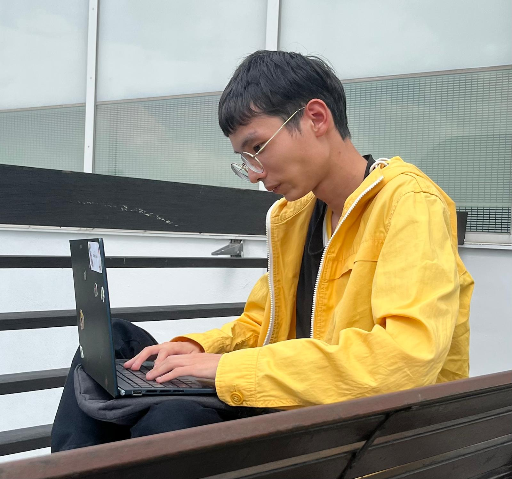
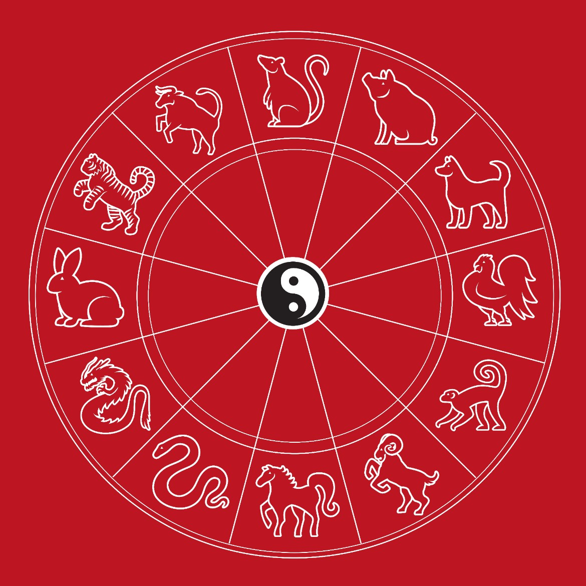
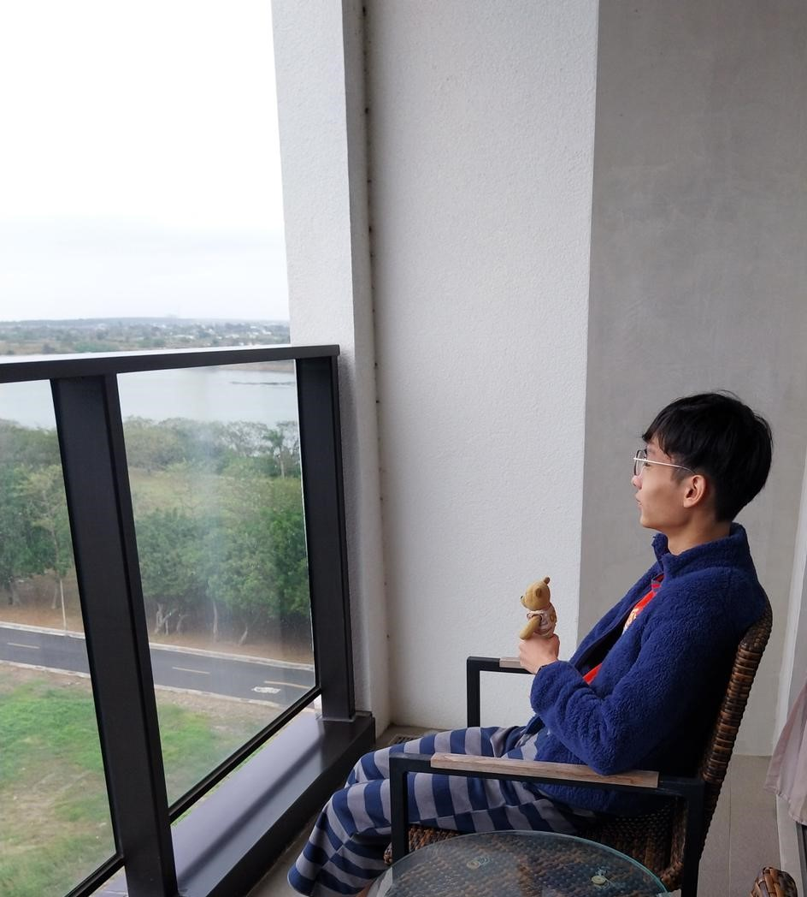
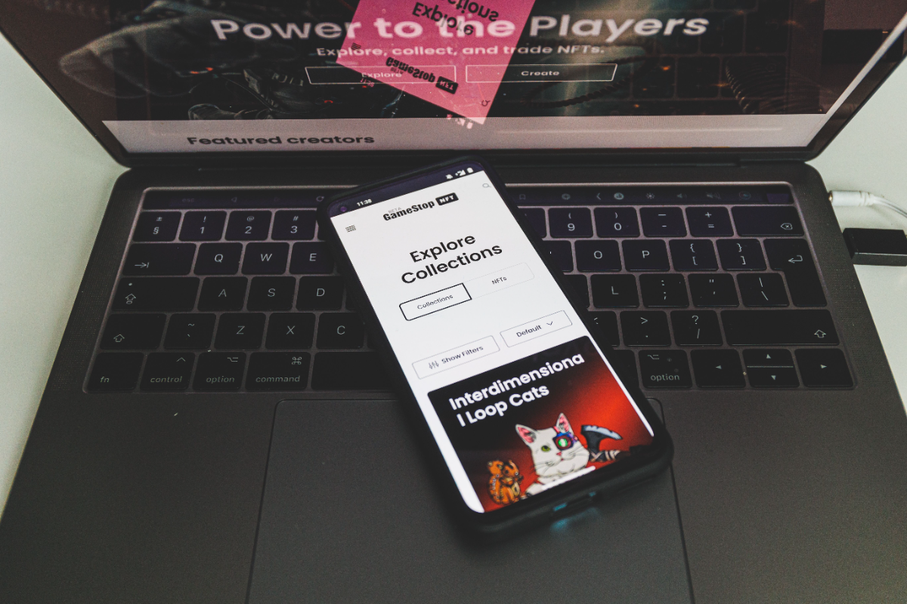

Some Things About ME !

✨ Four Quick Facts about me ! ✨
1. My favourite colour is yellow 💛🟡🟨
2. I love plushies 🧸
3. Music is my soul🎵
4. A proud night owl 🦉🌝
1. My favourite colour is yellow 💛🟡🟨
2. I love plushies 🧸
3. Music is my soul🎵
4. A proud night owl 🦉🌝
Welcome to my QnA 😊 Want to know me better? 🤔 Click each question to reveal the answer❕
What skills you learn in your diploma❓
For my diploma, I specialise in web development while learning some design skills
but focusing primarily on development which I find interesting and exciting.
Design Experience
• UI/UX Design, Wireframing, Prototyping (Figma)
• Digital Design (Adobe Illustrator)
• Core Design Principles (Contrast, Text Hierarchy, Consistency, Accessibility)
• Visual Hierarchy & Layout Principles (Alignment, Spacing, Balance, Emphasis)
• Digital Design (Adobe Illustrator)
• Core Design Principles (Contrast, Text Hierarchy, Consistency, Accessibility)
• Visual Hierarchy & Layout Principles (Alignment, Spacing, Balance, Emphasis)
Development Experience
• Object-Oriented Programming (Python)
• Front-end Web Development (HTML, CSS, JavaScript, React)
• Back-end Web Development (Express.js, Node.js)
• Framework and Template (EJS & Bootstrap)
• Database Systems (MySQL & MongoDB)
• Mobile app development (React Native)
• Game Development (Unity & C#)
• Development Tools (GitHub & Git)
• Deployment Sites (GitHub Pages & Vercel)
• Front-end Web Development (HTML, CSS, JavaScript, React)
• Back-end Web Development (Express.js, Node.js)
• Framework and Template (EJS & Bootstrap)
• Database Systems (MySQL & MongoDB)
• Mobile app development (React Native)
• Game Development (Unity & C#)
• Development Tools (GitHub & Git)
• Deployment Sites (GitHub Pages & Vercel)
What are my hobbies/interests❓
I have many hobbies but those listed below are the ones
I spent more time in
I spent more time in
• Drawing and journalling as creative outlets.
• Reading news to stay connected with the world.
• Astrology as in I know what kind of person you are using Bazi and ZWDS which are two chinese astrological tools used for fortune-telling.
• Reading news to stay connected with the world.
• Astrology as in I know what kind of person you are using Bazi and ZWDS which are two chinese astrological tools used for fortune-telling.

Click me, I can talk ➔

What is your personality❓
• I am a friendly introvert who loves contributing to meaningful causes
• I have a sensitive nature and also a deep thinker
• I enjoy calm and quiet settings
• I value my 'alone time' to recharge
• I have a sensitive nature and also a deep thinker
• I enjoy calm and quiet settings
• I value my 'alone time' to recharge

What is my passion❓

I am passionate in coding especially when it comes to creating and designing websites. I seek to
discover technological trends and I am constantly driven to grow my skills and stay adaptable in today’s
fast-evolving digital landscape.
Are you inclined to design or development❓
I would say I am 2/3 being a developer and 1/3 being a designer. While I enjoy
design, I am more confident in my development skills.
Hopefully, you now know the person behind the pixels❕ 😀
if works == True:
print("Check out my cool
works!")
elif certificates == True:
print("View
my nice certificates!")
else:
print("See my Resume!")